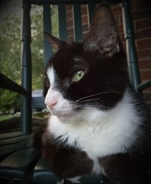

|  | Allie CatA Cool Tuxedo Cat Allie was a black and white tuxedo cat who lived in West Mifflin, PA from 1999-2017. She enjoyed many things and disliked many others. |
Allie was adopted from the Humane Society of Pittsburgh, PA on Easter weekend 1999. As the runt of the litter, she was the last of her siblings to find a furrever home. A tiny ball of black and white fluff, she met her new family with a pink bow around her neck. She was very good at hiding under the couch, rolling items (like Crayola markers) back to the person who rolled them to her, and wearing baby dolls dresses (with much patience) forced on her by children. When a second kitten, Jake, entered the home, she adopted him as her own and spend many days playing with him.
Though Allie loved Jake, she made it clear that all other cats to come would be considered strangers and therefore unwelcome. However, not being one for conflict, she decided to spend her days basking in the sun and ignoring those she did not find worthy of her attention. She dedicated her time to eating the top half of powdered donuts and observing plebeians from the top of the cat tree. As her humans became teenagers, she rarely had to wear cat sized clothing.
Allie grew into a beautiful, wise old kitty who enjoyed telling you what she wanted (with much sass) and snoozing on the front porch rocking chair. Though she began life as a runt, she become a big beautiful cat with a long black tail that she wrapped around herself on sunny afternoons. Luckily, her now adult humans no longer required her to wear a uniform of any type. She lived to be 18 years old.
| Sun Bathing | 🧶🧶🧶🧶🧶 |
| Eating Donuts | 🧶🧶🧶🧶🧶 |
| Wearing Dresses | 🧶🧶🧶🧶 |
| Going on Walks | 🧶 |